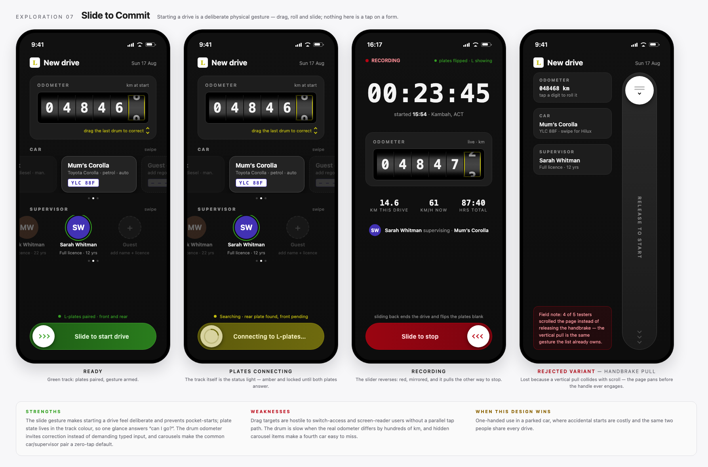
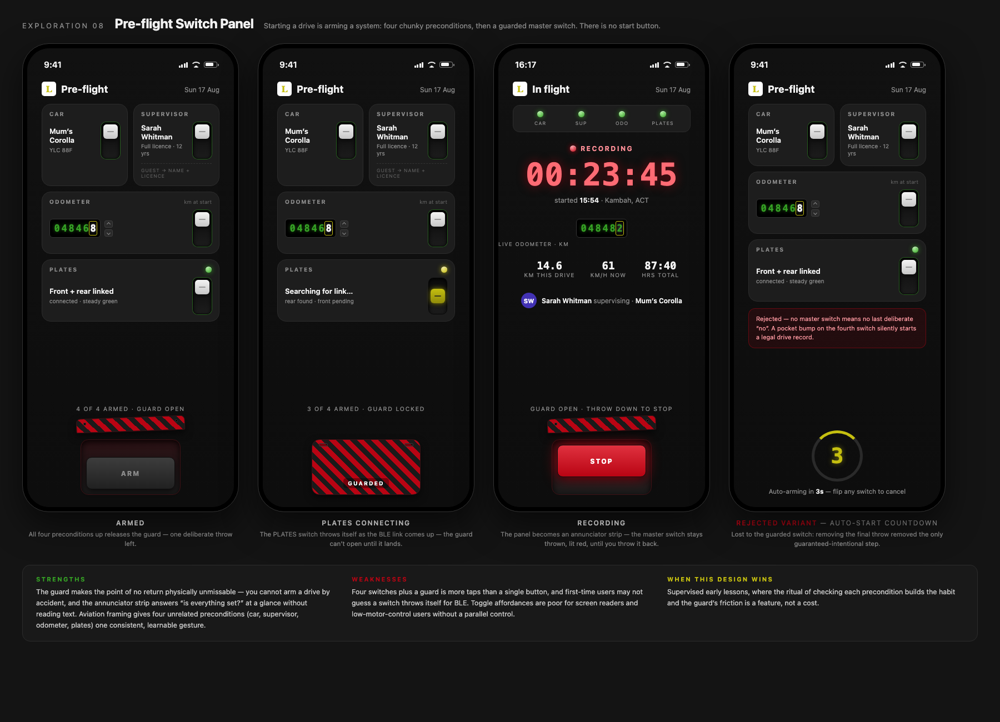
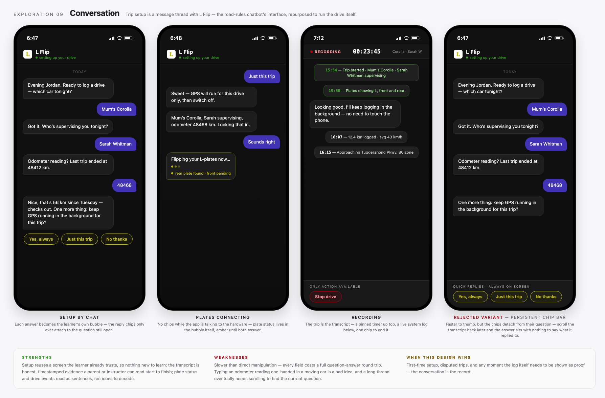
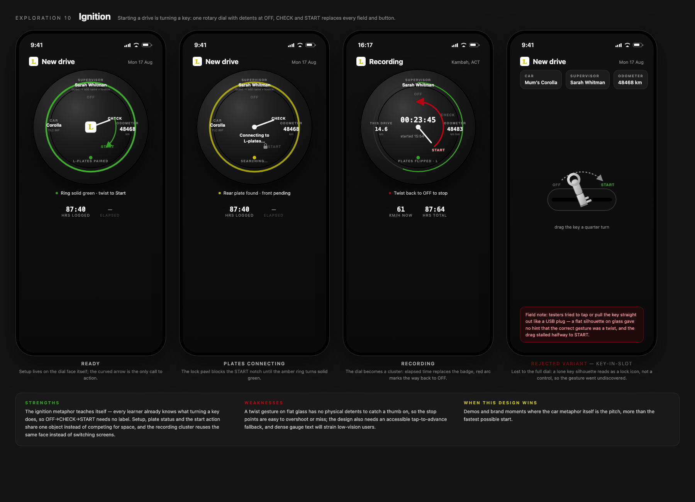

07Slide to commit

Round one converged on form-plus-button, so round two banned form fields, primary buttons and card grids — the interaction mechanism itself had to differ.




Scoring — 1–5 against real use: repeat drive, one hand, phone soon cradled, BLE plates slow or absent
| Criterion | 01Big Button + grid | 02Dashboard-first | 03Wizard flow | 04Map-first | 05Paper logbook | 06Car-dashboard HMI | 07Slide to commit | 08Pre-flight switch panel | 09Conversation | 10Ignition dial |
|---|---|---|---|---|---|---|---|---|---|---|
| Taps to start (repeat trip) | 5 | 3 | 1 | 4 | 3 | 5 | 4 | 2 | 2 | 3 |
| One-handed reach | 5 | 3 | 4 | 3 | 2 | 5 | 4 | 3 | 3 | 3 |
| Glanceability in the car | 5 | 3 | 2 | 4 | 1 | 5 | 4 | 4 | 2 | 4 |
| Error-proofing (odo / guest) | 3 | 3 | 5 | 2 | 3 | 3 | 4 | 5 | 4 | 3 |
| Plate status visibility | 4 | 4 | 4 | 3 | 2 | 5 | 5 | 5 | 4 | 4 |
| Build cost in Ionic (5 = cheapest) | 5 | 4 | 2 | 1 | 3 | 3 | 2 | 1 | 2 | 1 |
| Total / 30 | 27 | 20 | 18 | 17 | 14 | 26 | 23 | 20 | 17 | 18 |
Decision: Big Button + grid (27/30). Ties the Car HMI (26/30) on every in-car criterion but stays comfortable off the cradle, and is the cheapest to reach from the existing Ionic screen.
What the losers changed: slide-track and switch-panel put status inside the control — adopted: the start button doubles as the plate status light (amber connecting, green ready). Wizard and switch-panel back the can’t-start-until-valid gating and the “plates not connected — start anyway / wait” fail-safe. HMI’s tiles are the grid; ledger shapes history; map lives in trip detail; the chat’s transcript shapes trip evidence.
Open: start-button colour — exploration favoured green (red reserved for Stop); the red build is preserved as evidence if overruled.